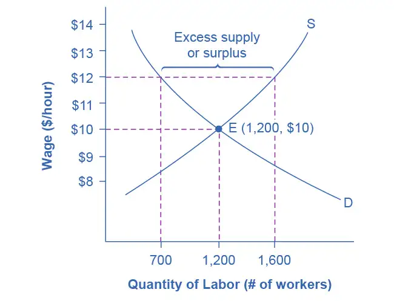
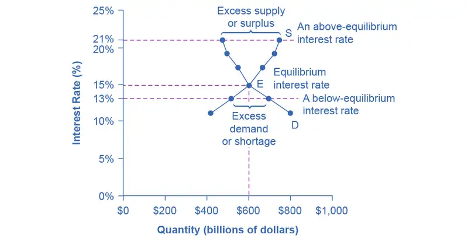
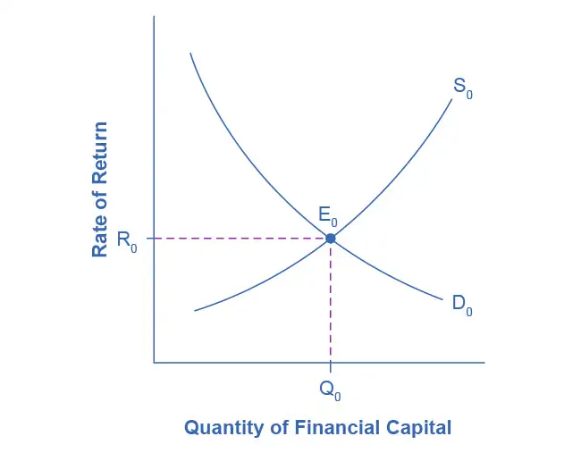
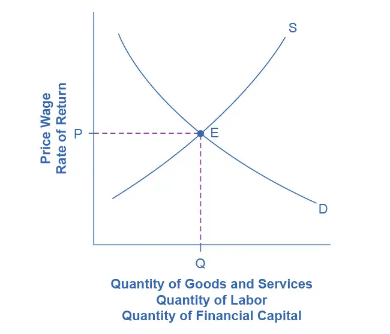
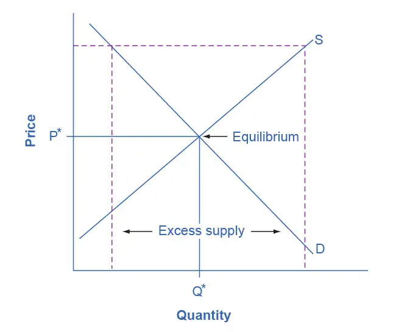
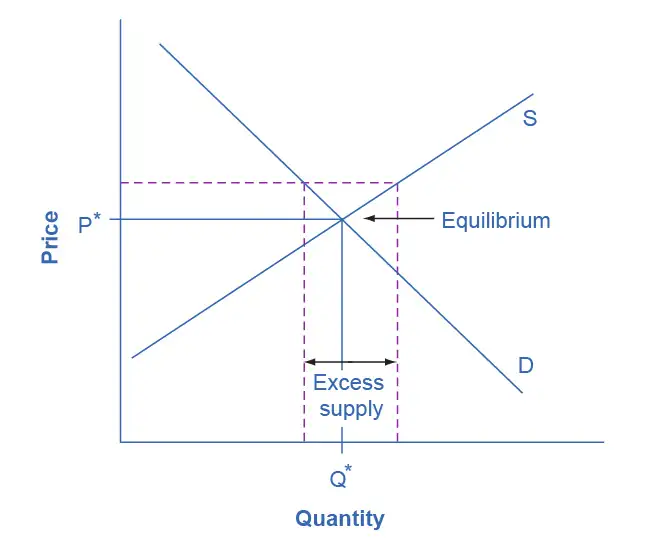
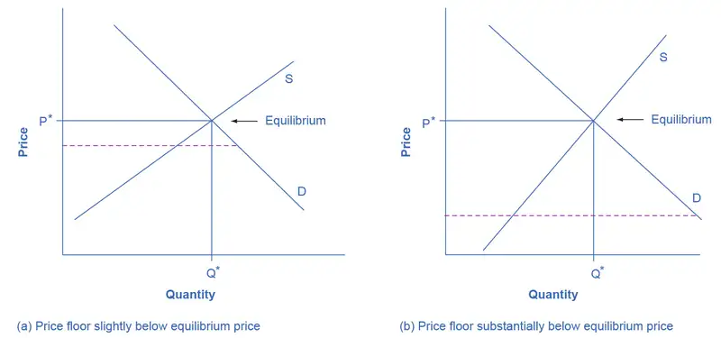
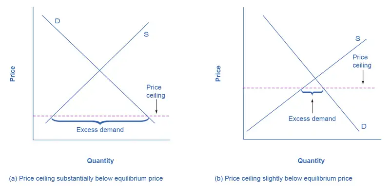
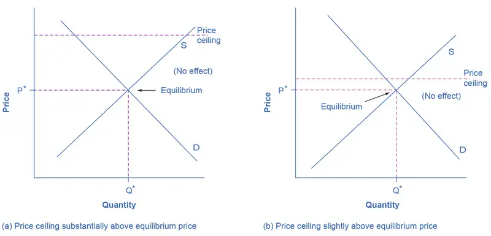

Chapter 4: Labor and Financial Markets¶
Introduction¶
Bring It Home: Baby Boomers Come of Age
According to the 2020 Census, 22% of the U.S. population was 60 years old or older, which means that more than 74 million people have reached an age when they will need increased medical care.
The baby boomer population, the group born between 1946 and 1964, is comprised of more than 71 million people who have already reached retirement age or will soon reach retirement. As this population grows older, they will be faced with common healthcare issues such as heart conditions, arthritis, and Alzheimer’s that may require hospitalization, long-term, or at-home nursing care. Aging baby boomers and advances in life-saving and life-extending technologies will increase the demand for healthcare and nursing. Additionally, the Affordable Care Act, which expands access to healthcare for millions of Americans, has further increased the demand.
These data tell us, as economists, that the market for healthcare professionals, and nurses in particular, will face several challenges. Our study of supply and demand will help us to analyze what might happen in the labor market for nursing and other healthcare professionals, as we will discuss in the second half of this case at the end of the chapter.
Chapter Outline: Introduction to Labor and Financial Markets
In this chapter, you will learn about:
- Demand and Supply at Work in Labor Markets
- Demand and Supply in Financial Markets
- The Market System as an Efficient Mechanism for Information
The theories of supply and demand do not apply just to markets for goods. They apply to any market, even markets for things we may not think of as goods and services like labor and financial services. Labor markets are markets for employees or jobs. Financial services markets are markets for saving or borrowing.
When we think about demand and supply curves in goods and services markets, it is easy to picture the demanders and suppliers: businesses produce the products and households buy them. Who are the demanders and suppliers in labor and financial service markets? In labor markets job seekers (individuals) are the suppliers of labor, while firms and other employers who hire labor are the demanders for labor. In financial markets, any individual or firm who saves contributes to the supply of money, and any entity that borrows (person, firm, or government) contributes to the demand for money.
As a college student, you most likely participate in both labor and financial markets. Employment is a fact of life for most college students: According to the National Center for Educational Statistics, in 2018 43% of full-time college students and 81% of part-time college students were employed. Most college students are also heavily involved in financial markets, primarily as borrowers. As of the 2018–19 school year, 43% of full-time undergraduate students were receiving loan aid to help finance their education, and those loans averaged $7,300 per year. Many students also borrow for other expenses, like purchasing a car. As this chapter will illustrate, we can analyze labor markets and financial markets with the same tools we use to analyze demand and supply in the goods markets.
4.1 Demand and Supply at Work in Labor Markets¶
Learning Objectives
By the end of this section, you will be able to:
- Predict shifts in the demand and supply curves of the labor market
- Explain the impact of new technology on the demand and supply curves of the labor market
- Explain price floors in the labor market such as minimum wage or a living wage
Markets for labor have demand and supply curves, just like markets for goods. The law of demand applies in labor markets this way: A higher salary or wage—that is, a higher price in the labor market—leads to a decrease in the quantity of labor demanded by employers, while a lower salary or wage leads to an increase in the quantity of labor demanded. The law of supply functions in labor markets, too: A higher price for labor leads to a higher quantity of labor supplied; a lower price leads to a lower quantity supplied.
Equilibrium in the Labor Market¶
In 2020, nearly 41,000 registered nurses worked in the Minneapolis-St. Paul-Bloomington, Minnesota-Wisconsin metropolitan area, according to the BLS. They worked for a variety of employers: hospitals, doctors’ offices, schools, health clinics, and nursing homes. Figure 4.2 illustrates how demand and supply determine equilibrium in this labor market. The demand and supply schedules in Table 4.1 list the quantity supplied and quantity demanded of nurses at different salaries.
![The graph illustrates the labor market for nurses, showing both the demand for nurses and the supply of nurses. The demand for nurses is downward-sloping, representing the law of demand. The supply of nurses is upward-sloping, representing the law of supply. They intersect at a salary of 80,000 dollars and 40,000 nursed hired, illustrating equilibrium. It also shows what happens when the market is not in equilibrium. There is a dashed horizontal line representing an excess supply of labor or surplus at an above-equilibrium salary of 90,000 dollars, and a dashed horizontal line representing an excess demand of labor or shortage at a below-equilibrium salary of 70,000 dollars.](img/cnx-econ3e-c04-001.webp)
Table 4.1 Demand and Supply of Nurses in Minneapolis-St. Paul-Bloomington
| Annual Salary | Quantity Demanded | Quantity Supplied |
|---|---|---|
| $70,000 | 52,000 | 27,000 |
| $75,000 | 47,000 | 34,000 |
| $80,000 | 44,000 | 38,000 |
| $85,000 | 41,000 | 41,000 |
| $90,000 | 40,000 | 45,000 |
| $95,000 | 39,000 | 48,000 |
The horizontal axis shows the quantity of nurses hired. In this example we measure labor by number of workers, but another common way to measure the quantity of labor is by the number of hours worked. The vertical axis shows the price for nurses’ labor—that is, how much they are paid. In the real world, this “price” would be total labor compensation: salary plus benefits. It is not obvious, but benefits are a significant part (as high as 30 percent) of labor compensation. In this example we measure the price of labor by salary on an annual basis, although in other cases we could measure the price of labor by monthly or weekly pay, or even the wage paid per hour. As the salary for nurses rises, the quantity demanded will fall. Some hospitals and nursing homes may reduce the number of nurses they hire, or they may lay off some of their existing nurses, rather than pay them higher salaries. Employers who face higher nurses’ salaries may also try to replace some nursing functions by investing in physical equipment, like computer monitoring and diagnostic systems to monitor patients, or by using lower-paid health care aides to reduce the number of nurses they need.
As the salary for nurses rises, the quantity supplied will rise. If nurses’ salaries in Minneapolis-St. Paul-Bloomington are higher than in other cities, more nurses will move to Minneapolis-St. Paul-Bloomington to find jobs, more people will be willing to train as nurses, and those currently trained as nurses will be more likely to pursue nursing as a full-time job. In other words, there will be more nurses looking for jobs in the area.
At equilibrium, the quantity supplied and the quantity demanded are equal. Thus, every employer who wants to hire a nurse at this equilibrium wage can find a willing worker, and every nurse who wants to work at this equilibrium salary can find a job. In Figure 4.2, the supply curve (S) and demand curve (D) intersect at the equilibrium point (E). The equilibrium quantity of nurses in the Minneapolis-St. Paul-Bloomington area is 41,000, and the equilibrium salary is $85,000 per year. This example simplifies the nursing market by focusing on the “average” nurse. In reality, of course, the market for nurses actually comprises many smaller markets, like markets for nurses with varying degrees of experience and credentials. Many markets contain closely related products that differ in quality. For instance, even a simple product like gasoline comes in regular, premium, and super-premium, each with a different price. Even in such cases, discussing the average price of gasoline, like the average salary for nurses, can still be useful because it reflects what is happening in most of the submarkets.
When the price of labor is not at the equilibrium, economic incentives tend to move salaries toward the equilibrium. For example, if salaries for nurses in Minneapolis-St. Paul-Bloomington were above the equilibrium at $90,000 per year, then 45,000 people want to work as nurses, but employers want to hire only 40,000 nurses. At that above-equilibrium salary, excess supply or a surplus results. In a situation of excess supply in the labor market, with many applicants for every job opening, employers will have an incentive to offer lower wages than they otherwise would have. Nurses’ salary will move down toward equilibrium.
In contrast, if the salary is below the equilibrium at, say, $70,000 per year, then a situation of excess demand or a shortage arises. In this case, employers encouraged by the relatively lower wage want to hire 52,000 nurses, but only 27,000 individuals want to work as nurses at that salary in Minneapolis-St. Paul-Bloomington. In response to the shortage, some employers will offer higher pay to attract the nurses. Other employers will have to match the higher pay to keep their own employees. The higher salaries will encourage more nurses to train or work in Minneapolis-St. Paul-Bloomington. Again, price and quantity in the labor market will move toward equilibrium.
Shifts in Labor Demand¶
The demand curve for labor shows the quantity of labor employers wish to hire at any given salary or wage rate, under the ceteris paribus assumption. A change in the wage or salary will result in a change in the quantity demanded of labor. If the wage rate increases, employers will want to hire fewer employees. The quantity of labor demanded will decrease, and there will be a movement upward along the demand curve. If the wages and salaries decrease, employers are more likely to hire a greater number of workers. The quantity of labor demanded will increase, resulting in a downward movement along the demand curve.
Shifts in the demand curve for labor occur for many reasons. One key reason is that the demand for labor is based on the demand for the good or service that is produced. For example, the more new automobiles consumers demand, the greater the number of workers automakers will need to hire. Therefore the demand for labor is called a “derived demand.” Here are some examples of derived demand for labor:
- The demand for chefs is dependent on the demand for restaurant meals.
- The demand for pharmacists is dependent on the demand for prescription drugs.
- The demand for attorneys is dependent on the demand for legal services.
As the demand for the goods and services increases, the demand for labor will increase, or shift to the right, to meet employers’ production requirements. As the demand for the goods and services decreases, the demand for labor will decrease, or shift to the left. Table 4.2 shows that in addition to the derived demand for labor, demand can also increase or decrease (shift) in response to several factors.
Table 4.2 Factors That Can Shift Demand
| Factors | Results |
|---|---|
| Demand for Output | When the demand for the good produced (output) increases, both the output price and profitability increase. As a result, producers demand more labor to ramp up production. |
| Education and Training | A well-trained and educated workforce causes an increase in the demand for that labor by employers. Increased levels of productivity within the workforce will cause the demand for labor to shift to the right. If the workforce is not well-trained or educated, employers will not hire from within that labor pool, since they will need to spend a significant amount of time and money training that workforce. Demand for such will shift to the left. |
| Technology | Technology changes can act as either substitutes for or complements to labor. When technology acts as a substitute, it replaces the need for the number of workers an employer needs to hire. For example, word processing decreased the number of typists needed in the workplace. This shifted the demand curve for typists left. An increase in the availability of certain technologies may increase the demand for labor. Technology that acts as a complement to labor will increase the demand for certain types of labor, resulting in a rightward shift of the demand curve. For example, the increased use of word processing and other software has increased the demand for information technology professionals who can resolve software and hardware issues related to a firm’s network. More and better technology will increase demand for skilled workers who know how to use technology to enhance workplace productivity. Those workers who do not adapt to changes in technology will experience a decrease in demand. |
| Number of Companies | An increase in the number of companies producing a given product will increase the demand for labor resulting in a shift to the right. A decrease in the number of companies producing a given product will decrease the demand for labor resulting in a shift to the left. |
| Government Regulations | Complying with government regulations can increase or decrease the demand for labor at any given wage. In the healthcare industry, government rules may require that nurses be hired to carry out certain medical procedures. This will increase the demand for nurses. Less-trained healthcare workers would be prohibited from carrying out these procedures, and the demand for these workers will shift to the left. |
| Price and Availability of Other Inputs | Labor is not the only input into the production process. For example, a salesperson at a call center needs a telephone and a computer terminal to enter data and record sales. If prices of other inputs fall, production will become more profitable and suppliers will demand more labor to increase production. This will cause a rightward shift in the demand curve for labor. The opposite is also true. Higher prices for other inputs lower demand for labor. |
Link It Up
Click here to read more about “Trends and Challenges for Work in the 21st Century.”
Shifts in Labor Supply¶
The supply of labor is upward-sloping and adheres to the law of supply: The higher the price, the greater the quantity supplied and the lower the price, the less quantity supplied. The supply curve models the tradeoff between supplying labor into the market or using time in leisure activities at every given price level. The higher the wage, the more labor is willing to work and forego leisure activities. Table 4.3 lists some of the factors that will cause the supply to increase or decrease.
Table 4.3 Factors that Can Shift Supply
| Factors | Results |
|---|---|
| Number of Workers | An increased number of workers will cause the supply curve to shift to the right. An increased number of workers can be due to several factors, such as immigration, increasing population, an aging population, and changing demographics. Policies that encourage immigration will increase the supply of labor, and vice versa. Population grows when birth rates exceed death rates. This eventually increases supply of labor when the former reach working age. Another example of changing demographics is more women working outside of the home, which increases the supply of labor. |
| Required Education | The more required education, the lower the supply. There is a lower supply of PhD mathematicians than of high school mathematics teachers; there is a lower supply of cardiologists than of primary care physicians; and there is a lower supply of physicians than of nurses. |
| Government Policies | Government policies can also affect the supply of labor for jobs. Alternatively, the government may support rules that set high qualifications for certain jobs: academic training, certificates or licenses, or experience. When these qualifications are made tougher, the number of qualified workers will decrease at any given wage. On the other hand, the government may also subsidize training or even reduce the required level of qualifications. For example, government might offer subsidies for nursing schools or nursing students. Such provisions would shift the supply curve of nurses to the right. In addition, government policies that change the relative desirability of working versus not working also affect the labor supply. These include unemployment benefits, maternity leave, child care benefits, and welfare policy. For example, child care benefits may increase the labor supply of working mothers. Long term unemployment benefits may discourage job searching for unemployed workers. All these policies must therefore be carefully designed to minimize any negative labor supply effects. |
A change in salary will lead to a movement along labor demand or labor supply curves, but it will not shift those curves. However, other events like those we have outlined here will cause either the demand or the supply of labor to shift, and thus will move the labor market to a new equilibrium salary and quantity.
Technology and Wage Inequality: The Four-Step Process¶
Economic events can change the equilibrium salary (or wage) and quantity of labor. Consider how the wave of new information technologies, like computer and telecommunications networks, has affected low-skill and high-skill workers in the U.S. economy. From the perspective of employers who demand labor, these new technologies are often a substitute for low-skill laborers like file clerks who used to keep file cabinets full of paper records of transactions. However, the same new technologies are a complement to high-skill workers like managers, who benefit from the technological advances by having the ability to monitor more information, communicate more easily, and juggle a wider array of responsibilities. How will the new technologies affect the wages of high-skill and low-skill workers? For this question, the four-step process of analyzing how shifts in supply or demand affect a market (introduced in Demand and Supply) works in this way:
Step 1. What did the markets for low-skill labor and high-skill labor look like before the arrival of the new technologies? In Figure 4.3 (a) and Figure 4.3 (b), S0 is the original supply curve for labor and D0 is the original demand curve for labor in each market. In each graph, the original point of equilibrium, E0, occurs at the price W0 and the quantity Q0.
![Two graphs are illustrated. The one on the left (a) is the labor market for low-skill labor, and the one on the right (b) is for high-skill labor. As new technologies arrive, the demand for low-skill labor decreases, so in the graph on the left, the labor demand curve moves to the left, and the result is a lower equilibrium wage rate and quantity, meaning fewer workers hired. In the graph on the right, the labor demand curve moves to the right, and the result is a higher equilibrium wage rate and quantity, meaning more workers hired.](img/cnx-econ3e-c04-009.webp)
Step 2. Does the new technology affect the supply of labor from households or the demand for labor from firms? The technology change described here affects demand for labor by firms that hire workers.
Step 3. Will the new technology increase or decrease demand? Based on the description earlier, as the substitute for low-skill labor becomes available, demand for low-skill labor will shift to the left, from D0 to D1. As the technology complement for high-skill labor becomes cheaper, demand for high-skill labor will shift to the right, from D0 to D1.
Step 4. The new equilibrium for low-skill labor, shown as point E1 with price W1 and quantity Q1, has a lower wage and quantity hired than the original equilibrium, E0. The new equilibrium for high-skill labor, shown as point E1 with price W1 and quantity Q1, has a higher wage and quantity hired than the original equilibrium (E0).
Thus, the demand and supply model predicts that the new computer and communications technologies will raise the pay of high-skill workers but reduce the pay of low-skill workers. From the 1970s to the mid-2000s, the wage gap widened between high-skill and low-skill labor. According to the National Center for Education Statistics, in 1980, for example, a college graduate earned about 30% more than a high school graduate with comparable job experience, but by 2019, a college graduate earned about 59% more than an otherwise comparable high school graduate. Many economists believe that the trend toward greater wage inequality across the U.S. economy is due to improvements in technology.
Link It Up
Visit this website to read about ten tech skills that have lost relevance in today’s workforce.
Price Floors in the Labor Market: Living Wages and Minimum Wages¶
In contrast to goods and services markets, price ceilings are rare in labor markets, because rules that prevent people from earning income are not politically popular. There is one exception: boards of trustees or stockholders, as an example, propose limits on the high incomes of top business executives.
The labor market, however, presents some prominent examples of price floors, which are an attempt to increase the wages of low-paid workers. The U.S. government sets a minimum wage, a price floor that makes it illegal for an employer to pay employees less than a certain hourly rate. In mid-2009, the U.S. minimum wage was raised to $7.25 per hour. Local political movements in a number of U.S. cities have pushed for a higher minimum wage, which they call a living wage. Promoters of living wage laws maintain that the minimum wage is too low to ensure a reasonable standard of living. They base this conclusion on the calculation that, if you work 40 hours a week at a minimum wage of $7.25 per hour for 50 weeks a year, your annual income is $14,500, which is less than the official U.S. government definition of what it means for a family to be in poverty. (A family with two adults earning minimum wage and two young children will find it more cost efficient for one parent to provide childcare while the other works for income. Thus the family income would be $14,500, which is significantly lower than the federal poverty line for a family of four, which was $26,500 in 2021.)
Supporters of the living wage argue that full-time workers should be assured a high enough wage so that they can afford the essentials of life: food, clothing, shelter, and healthcare. Since Baltimore passed the first living wage law in 1994, several dozen cities enacted similar laws in the late 1990s and the 2000s. The living wage ordinances do not apply to all employers, but they have specified that all employees of the city or employees of firms that the city hires be paid at least a certain wage that is usually a few dollars per hour above the U.S. minimum wage.
Figure 4.4 illustrates the situation of a city considering a living wage law. For simplicity, we assume that there is no federal minimum wage. The wage appears on the vertical axis, because the wage is the price in the labor market. Before the passage of the living wage law, the equilibrium wage is $10 per hour and the city hires 1,200 workers at this wage. However, a group of concerned citizens persuades the city council to enact a living wage law requiring employers to pay no less than $12 per hour. In response to the higher wage, 1,600 workers look for jobs with the city. At this higher wage, the city, as an employer, is willing to hire only 700 workers. At the price floor, the quantity supplied exceeds the quantity demanded, and a surplus of labor exists in this market. For workers who continue to have a job at a higher salary, life has improved. For those who were willing to work at the old wage rate but lost their jobs with the wage increase, life has not improved. Table 4.4 shows the differences in supply and demand at different wages.

Table 4.4 Living Wage: Example of a Price Floor
| Wage | Quantity Labor Demanded | Quantity Labor Supplied |
|---|---|---|
| $8/hr | 1,900 | 500 |
| $9/hr | 1,500 | 900 |
| $10/hr | 1,200 | 1,200 |
| $11/hr | 900 | 1,400 |
| $12/hr | 700 | 1,600 |
| $13/hr | 500 | 1,800 |
| $14/hr | 400 | 1,900 |
The Minimum Wage as an Example of a Price Floor¶
The U.S. minimum wage is a price floor that is set either very close to the equilibrium wage or even slightly below it. About 1.5% of hourly workers in the U.S. are paid the minimum wage. In other words, the vast majority of the U.S. labor force has its wages determined in the labor market, not as a result of the government price floor. However, for workers with low skills and little experience, like those without a high school diploma or teenagers, the minimum wage is quite important. In many cities, the federal minimum wage is apparently below the market price for unskilled labor, because employers offer more than the minimum wage to checkout clerks and other low-skill workers without any government prodding.
Economists have attempted to estimate how much the minimum wage reduces the quantity demanded of low-skill labor. A typical result of such studies is that a 10% increase in the minimum wage would decrease the hiring of unskilled workers by 1 to 2%, which seems a relatively small reduction. In fact, some studies have even found no effect of a higher minimum wage on employment at certain times and places—although these studies are controversial. Well-known economists Walter Williams and Thomas Sowell, who both focus on the intersections of race and economics, argue that minimum wages increase discrimination and limit economic mobility. Williams, for example, indicates that higher minimum wages would increase employment barriers for lower-skilled workers, reducing the opportunity for them to learn on the job and gain experience that would give them more choice in employment.
Let’s suppose that the minimum wage lies just slightly below the equilibrium wage level. Wages could fluctuate according to market forces above this price floor, but they would not be allowed to move beneath the floor. In this situation, the price floor minimum wage is nonbinding —that is, the price floor is not determining the market outcome. Even if the minimum wage moves just a little higher, it will still have no effect on the quantity of employment in the economy, as long as it remains below the equilibrium wage. Even if the government increases the minimum wage by enough so that it rises slightly above the equilibrium wage and becomes binding, there will be only a small excess supply gap between the quantity demanded and quantity supplied.
These insights help to explain why U.S. minimum wage laws have historically had only a small impact on employment. Since the minimum wage has typically been set close to the equilibrium wage for low-skill labor and sometimes even below it, it has not had a large effect in creating an excess supply of labor. However, if the minimum wage increased dramatically—say, if it doubled to match the living wages that some U.S. cities have considered—then its impact on reducing the quantity demanded of employment would be far greater. The following Clear It Up feature describes in greater detail some of the arguments for and against changes to the minimum wage.
Clear It Up: What’s the harm in raising the minimum wage?
Because of the law of demand, a higher required wage will reduce the amount of low-skill employment either in terms of employees or in terms of work hours. Although there is controversy over the numbers, let’s say for the sake of the argument that a 10% rise in the minimum wage will reduce the employment of low-skill workers by 2%. Does this outcome mean that raising the minimum wage by 10% is bad public policy? Not necessarily.
If 98% of those receiving the minimum wage have a pay increase of 10%, but 2% of those receiving the minimum wage lose their jobs, are the gains for society as a whole greater than the losses? The answer is not clear, because job losses, even for a small group, may cause more pain than modest income gains for others. For one thing, we need to consider which minimum wage workers are losing their jobs. If the 2% of minimum wage workers who lose their jobs are struggling to support families, that is one thing. If those who lose their job are high school students picking up spending money over summer vacation, that is something else.
Another complexity is that many minimum wage workers do not work full-time for an entire year. Imagine a minimum wage worker who holds different part-time jobs for a few months at a time, with bouts of unemployment in between. The worker in this situation receives the 10% raise in the minimum wage when working, but also ends up working 2% fewer hours during the year because the higher minimum wage reduces how much employers want people to work. Overall, this worker’s income would rise because the 10% pay raise would more than offset the 2% fewer hours worked.
Of course, these arguments do not prove that raising the minimum wage is necessarily a good idea either. There may well be other, better public policy options for helping low-wage workers. (The Poverty and Economic Inequality chapter discusses some possibilities.) The lesson from this maze of minimum wage arguments is that complex social problems rarely have simple answers. Even those who agree on how a proposed economic policy affects quantity demanded and quantity supplied may still disagree on whether the policy is a good idea.
4.2 Demand and Supply in Financial Markets¶
Learning Objectives
By the end of this section, you will be able to:
- Identify the demanders and suppliers in a financial market
- Explain how interest rates can affect supply and demand
- Analyze the economic effects of U.S. debt in terms of domestic financial markets
- Explain the role of price ceilings and usury laws in the U.S.
United States' households, institutions, and domestic businesses saved almost $1.3 trillion in 2015. Where did that savings go and how was it used? Some of the savings ended up in banks, which in turn loaned the money to individuals or businesses that wanted to borrow money. Some was invested in private companies or loaned to government agencies that wanted to borrow money to raise funds for purposes like building roads or mass transit. Some firms reinvested their savings in their own businesses.
In this section, we will determine how the demand and supply model links those who wish to supply financial capital (i.e., savings) with those who demand financial capital (i.e., borrowing). Those who save money (or make financial investments, which is the same thing), whether individuals or businesses, are on the supply side of the financial market. Those who borrow money are on the demand side of the financial market. For a more detailed treatment of the different kinds of financial investments like bank accounts, stocks and bonds, see the Financial Markets chapter.
Who Demands and Who Supplies in Financial Markets?¶
In any market, the price is what suppliers receive and what demanders pay. In financial markets, those who supply financial capital through saving expect to receive a rate of return, while those who demand financial capital by receiving funds expect to pay a rate of return. This rate of return can come in a variety of forms, depending on the type of investment.
The simplest example of a rate of return is the interest rate. For example, when you supply money into a savings account at a bank, you receive interest on your deposit. The interest the bank pays you as a percent of your deposits is the interest rate. Similarly, if you demand a loan to buy a car or a computer, you will need to pay interest on the money you borrow.
Let’s consider the market for borrowing money with credit cards. In 2021, almost 200 million Americans were cardholders. Credit cards allow you to borrow money from the card's issuer, and pay back the borrowed amount plus interest, although most allow you a period of time in which you can repay the loan without paying interest. A typical credit card interest rate ranges from 12% to 18% per year. In May 2021, Americans had about $807 billion outstanding in credit card debts. As of 2021, just over 45% of American families carried some credit card debt. Let’s say that, on average, the annual interest rate for credit card borrowing is 15% per year. Thus, Americans pay tens of billions of dollars every year in interest on their credit cards—plus basic fees for the credit card or fees for late payments.
Figure 4.5 illustrates demand and supply in the financial market for credit cards. The horizontal axis of the financial market shows the quantity of money loaned or borrowed in this market. The vertical or price axis shows the rate of return, which in the case of credit card borrowing we can measure with an interest rate. Table 4.5 shows the quantity of financial capital that consumers demand at various interest rates and the quantity that credit card firms (often banks) are willing to supply.

Table 4.5 Demand and Supply for Borrowing Money with Credit Cards
| Interest Rate (%) | Quantity of Financial Capital Demanded (Borrowing) ($ billions) | Quantity of Financial Capital Supplied (Lending) ($ billions) |
|---|---|---|
| 11 | $800 | $420 |
| 13 | $700 | $510 |
| 15 | $600 | $600 |
| 17 | $550 | $660 |
| 19 | $500 | $720 |
| 21 | $480 | $750 |
The laws of demand and supply continue to apply in the financial markets. According to the law of demand, a higher rate of return (that is, a higher price) will decrease the quantity demanded. As the interest rate rises, consumers will reduce the quantity that they borrow. According to the law of supply, a higher price increases the quantity supplied. Consequently, as the interest rate paid on credit card borrowing rises, more firms will be eager to issue credit cards and to encourage customers to use them. Conversely, if the interest rate on credit cards falls, the quantity of financial capital supplied in the credit card market will decrease and the quantity demanded will increase.
Equilibrium in Financial Markets¶
In the financial market for credit cards in Figure 4.5, the supply curve (S) and the demand curve (D) cross at the equilibrium point (E). The equilibrium occurs at an interest rate of 15%, where the quantity of funds demanded and the quantity supplied are equal at an equilibrium quantity of $600 billion.
If the interest rate (remember, this measures the “price” in the financial market) is above the equilibrium level, then an excess supply, or a surplus, of financial capital will arise in this market. For example, at an interest rate of 21%, the quantity of funds supplied increases to $750 billion, while the quantity demanded decreases to $480 billion. At this above-equilibrium interest rate, firms are eager to supply loans to credit card borrowers, but relatively few people or businesses wish to borrow. As a result, some credit card firms will lower the interest rates (or other fees) they charge to attract more business. This strategy will push the interest rate down toward the equilibrium level.
If the interest rate is below the equilibrium, then excess demand or a shortage of funds occurs in this market. At an interest rate of 13%, the quantity of funds credit card borrowers demand increases to $700 billion, but the quantity credit card firms are willing to supply is only $510 billion. In this situation, credit card firms will perceive that they are overloaded with eager borrowers and conclude that they have an opportunity to raise interest rates or fees. The interest rate will face economic pressures to creep up toward the equilibrium level.
The FRED database publishes some two dozen measures of interest rates, including interest rates on credit cards, automobile loans, personal loans, mortgage loans, and more. You can find these at the FRED website.
Shifts in Demand and Supply in Financial Markets¶
Those who supply financial capital face two broad decisions: how much to save, and how to divide up their savings among different forms of financial investments. We will discuss each of these in turn.
Participants in financial markets must decide when they prefer to consume goods: now or in the future. Economists call this intertemporal decision making because it involves decisions across time. Unlike a decision about what to buy from the grocery store, people make investment or savings decisions across a period of time, sometimes a long period.
Most workers save for retirement because their income in the present is greater than their needs, while the opposite will be true once they retire. Thus, they save today and supply financial markets. If their income increases, they save more. If their perceived situation in the future changes, they change the amount of their saving. For example, there is some evidence that Social Security, the program that workers pay into in order to qualify for government checks after retirement, has tended to reduce the quantity of financial capital that workers save. If this is true, Social Security has shifted the supply of financial capital at any interest rate to the left.
By contrast, many college students need money today when their income is low (or nonexistent) to pay their college expenses. As a result, they borrow today and demand from financial markets. Once they graduate and become employed, they will pay back the loans. Individuals borrow money to purchase homes or cars. A business seeks financial investment so that it has the funds to build a factory or invest in a research and development project that will not pay off for five years, ten years, or even more. Thus, when consumers and businesses have greater confidence that they will be able to repay in the future, the quantity demanded of financial capital at any given interest rate will shift to the right.
For example, in the technology boom of the late 1990s, many businesses became extremely confident that investments in new technology would have a high rate of return, and their demand for financial capital shifted to the right. Conversely, during the 2008 and 2009 Great Recession, their demand for financial capital at any given interest rate shifted to the left.
To this point, we have been looking at saving in total. Now let us consider what affects saving in different types of financial investments. In deciding between different forms of financial investments, suppliers of financial capital will have to consider the rates of return and the risks involved. Rate of return is a positive attribute of investments, but risk is a negative. If Investment A becomes more risky, or the return diminishes, then savers will shift their funds to Investment B—and the supply curve of financial capital for Investment A will shift back to the left while the supply curve of capital for Investment B shifts to the right.
The United States as a Global Borrower¶
In the global economy, trillions of dollars of financial investment cross national borders every year. In the early 2000s, financial investors from foreign countries were investing several hundred billion dollars per year more in the U.S. economy than U.S. financial investors were investing abroad. The following Work It Out deals with one of the macroeconomic concerns for the U.S. economy in recent years.
Work It Out: The Effect of Growing U.S. Debt
Imagine that foreign investors viewed the U.S. economy as a less desirable place to put their money because of fears about the growth of the U.S. public debt. Using the four-step process for analyzing how changes in supply and demand affect equilibrium outcomes, how would increased U.S. public debt affect the equilibrium price and quantity for capital in U.S. financial markets?
Step 1. Draw a diagram showing demand and supply for financial capital that represents the original scenario in which foreign investors are pouring money into the U.S. economy. Figure 4.6 shows a demand curve, D, and a supply curve, S, where the supply of capital includes the funds arriving from foreign investors. The original equilibrium E0 occurs at interest rate R0 and quantity of financial investment Q0.

Step 2. Will the diminished confidence in the U.S. economy as a place to invest affect demand or supply of financial capital? Yes, it will affect supply. Many foreign investors look to the U.S. financial markets to store their money in safe financial vehicles with low risk and stable returns. Diminished confidence means U.S. financial assets will be seen as more risky.
Step 3. Will supply increase or decrease? When the enthusiasm of foreign investors’ for investing their money in the U.S. economy diminishes, the supply of financial capital shifts to the left. Figure 4.7 shows the supply curve shift from S0 to S1.
![The graph illustrates the market for financial capital in the United States and how it can be affected by foreign investors viewing the United States as a less desirable place to put their money because of fears about the growth of U.S. public debt. This graph represents Step 4 of the example, as the supply curve of financial capital moves to the left, representing the impact of the foreign investors’ fears, and the new equilibrium shows a lower quantity of financial capital and higher interest rates.](img/cnx-econ3e-c04-006.webp)
Step 4. Thus, foreign investors’ diminished enthusiasm leads to a new equilibrium, E1, which occurs at the higher interest rate, R1, and the lower quantity of financial investment, Q1. In short, U.S. borrowers will have to pay more interest on their borrowing.
The economy has experienced an enormous inflow of foreign capital. According to the U.S. Bureau of Economic Analysis, by the third quarter of 2021, U.S. investors had accumulated $34.45 trillion of foreign assets, but foreign investors owned a total of $50.53 trillion of U.S. assets. If foreign investors were to pull their money out of the U.S. economy and invest elsewhere in the world, the result could be a significantly lower quantity of financial investment in the United States, available only at a higher interest rate. This reduced inflow of foreign financial investment could impose hardship on U.S. consumers and firms interested in borrowing.
In a modern, developed economy, financial capital often moves invisibly through electronic transfers between one bank account and another. Yet we can analyze these flows of funds with the same tools of demand and supply as markets for goods or labor.
Price Ceilings in Financial Markets: Usury Laws¶
As we noted earlier, about 200 million Americans own credit cards, and their interest payments and fees total tens of billions of dollars each year. It is little wonder that political pressures sometimes arise for setting limits on the interest rates or fees that credit card companies charge. The firms that issue credit cards, including banks, oil companies, phone companies, and retail stores, respond that the higher interest rates are necessary to cover the losses created by those who borrow on their credit cards and who do not repay on time or at all. These companies also point out that cardholders can avoid paying interest if they pay their bills on time.
Consider the credit card market as Figure 4.8 illustrates. In this financial market, the vertical axis shows the interest rate (which is the price in the financial market). Demanders in the credit card market are households and businesses. Suppliers are the companies that issue credit cards. This figure does not use specific numbers, which would be hypothetical in any case, but instead focuses on the underlying economic relationships. Imagine a law imposes a price ceiling that holds the interest rate charged on credit cards at the rate Rc, which lies below the interest rate R0 that would otherwise have prevailed in the market. The horizontal dashed line at interest rate Rc in Figure 4.8 shows the price ceiling. The demand and supply model predicts that at the lower price ceiling interest rate, the quantity demanded of credit card debt will increase from its original level of Q0 to Qd; however, the quantity supplied of credit card debt will decrease from the original Q0 to Qs. At the price ceiling (Rc), quantity demanded will exceed quantity supplied. Consequently, a number of people who want to have credit cards and are willing to pay the prevailing interest rate will find that companies are unwilling to issue cards to them. The result will be a credit shortage.

Many states do have usury laws, which impose an upper limit on the interest rate that lenders can charge. However, in many cases these upper limits are well above the market interest rate. For example, if the interest rate is not allowed to rise above 30% per year, it can still fluctuate below that level according to market forces. A price ceiling that is set at a relatively high level is nonbinding, and it will have no practical effect unless the equilibrium price soars high enough to exceed the price ceiling.
4.3 The Market System as an Efficient Mechanism for Information¶
Learning Objectives
By the end of this section, you will be able to:
- Apply demand and supply models to analyze prices and quantities
- Explain the effects of price controls on the equilibrium of prices and quantities
Prices exist in markets for goods and services, for labor, and for financial capital. In all of these markets, prices serve as a remarkable social mechanism for collecting, combining, and transmitting information that is relevant to the market—namely, the relationship between demand and supply—and then serving as messengers to convey that information to buyers and sellers. In a market-oriented economy, no government agency or guiding intelligence oversees the set of responses and interconnections that result from a change in price. Instead, each consumer reacts according to that person’s preferences and budget set, and each profit-seeking producer reacts to the impact on its expected profits. The following Clear It Up feature examines the demand and supply models.
Clear It Up: Why are demand and supply curves important?
The demand and supply model is the second fundamental diagram for this course. (The opportunity set model that we introduced in the Choice in a World of Scarcity chapter was the first.) Just as it would be foolish to try to learn the arithmetic of long division by memorizing every possible combination of numbers that can be divided by each other, it would be foolish to try to memorize every specific example of demand and supply in this chapter, this textbook, or this course. Demand and supply is not primarily a list of examples. It is a model to analyze prices and quantities. Even though demand and supply diagrams have many labels, they are fundamentally the same in their logic. Your goal should be to understand the underlying model so you can use it to analyze any market.
Figure 4.9 displays a generic demand and supply curve. The horizontal axis shows the different measures of quantity: a quantity of a good or service, or a quantity of labor for a given job, or a quantity of financial capital. The vertical axis shows a measure of price: the price of a good or service, the wage in the labor market, or the rate of return (like the interest rate) in the financial market.
The demand and supply model can explain the existing levels of prices, wages, and rates of return. To carry out such an analysis, think about the quantity that will be demanded at each price and the quantity that will be supplied at each price—that is, think about the shape of the demand and supply curves—and how these forces will combine to produce equilibrium.
We can also use demand and supply to explain how economic events will cause changes in prices, wages, and rates of return. There are only four possibilities: the change in any single event may cause the demand curve to shift right or to shift left, or it may cause the supply curve to shift right or to shift left. The key to analyzing the effect of an economic event on equilibrium prices and quantities is to determine which of these four possibilities occurred. The way to do this correctly is to think back to the list of factors that shift the demand and supply curves. Note that if more than one variable is changing at the same time, the overall impact will depend on the degree of the shifts. When there are multiple variables, economists isolate each change and analyze it independently.

An increase in the price of some product signals consumers that there is a shortage; therefore, they may want to economize on buying this product. For example, if you are thinking about taking a plane trip to Hawaii, but the ticket turns out to be expensive during the week you intend to go, you might consider other weeks when the ticket might be cheaper. The price could be high because you were planning to travel during a holiday when demand for traveling is high. Maybe the cost of an input like jet fuel increased or the airline has raised the price temporarily to see how many people are willing to pay it. Perhaps all of these factors are present at the same time. You do not need to analyze the market and break down the price change into its underlying factors. You just have to look at the ticket price and decide whether and when to fly.
In the same way, price changes provide useful information to producers. Imagine the situation of a farmer who grows oats and learns that the price of oats has risen. The higher price could be due to an increase in demand caused by a new scientific study proclaiming that eating oats is especially healthful. Perhaps the price of a substitute grain, like corn, has risen, and people have responded by buying more oats. The oat farmer does not need to know the details. The farmer only needs to know that the price of oats has risen and that it will be profitable to expand production as a result.
The actions of individual consumers and producers as they react to prices overlap and interlock in markets for goods, labor, and financial capital. A change in any single market is transmitted through these multiple interconnections to other markets. The vision of the role of flexible prices helping markets to reach equilibrium and linking different markets together helps to explain why price controls can be so counterproductive. Price controls are government laws that serve to regulate prices rather than allow the various markets to determine prices. There is an old proverb: “Don’t kill the messenger.” In ancient times, messengers carried information between distant cities and kingdoms. When they brought bad news, there was an emotional impulse to kill the messenger. However, killing the messenger did not kill the bad news. Moreover, killing the messenger had an undesirable side effect: Other messengers would refuse to bring news to that city or kingdom, depriving its citizens of vital information.
Those who seek price controls are trying to kill the messenger—or at least to stifle an unwelcome message that prices are bringing about the equilibrium level of price and quantity. However, price controls do nothing to affect the underlying forces of demand and supply, and this can have serious repercussions. During China’s “Great Leap Forward” in the late 1950s, the government kept food prices artificially low, with the result that 30 to 40 million people died of starvation because the low prices depressed farm production. This was communist party leader Mao Zedong's social and economic campaign to rapidly transform the country from an agrarian economy to a socialist society through rapid industrialization and collectivization. Changes in demand and supply will continue to reveal themselves through consumers’ and producers’ behavior. Immobilizing the price messenger through price controls will deprive everyone in the economy of critical information. Without this information, it becomes difficult for everyone—buyers and sellers alike—to react in a flexible and appropriate manner as changes occur throughout the economy.
Bring It Home: Baby Boomers Come of Age
The theory of supply and demand can explain what happens in the labor markets and suggests that the demand for nurses will increase as healthcare needs of baby boomers increase, as Figure 4.10 shows. The impact of that increase will result in an average salary higher than the $75,330 earned in 2020 referenced in the first part of this case. The new equilibrium (E1) will be at the new equilibrium price (Pe1).Equilibrium quantity will also increase from Qe0 to Qe1.
![The graph illustrates the labor market for nurses, showing both the demand for nurses and the supply of nurses. The demand for nurses is downward-sloping, representing the law of demand. The supply of nurses is upward-sloping, representing the law of supply. The initial equilibrium is shown at salary of 75,330 dollars. An increase in demand is illustrated, with a second demand curve D 1 drawn to the right of the original demand D 0. This increase in demand leads to a new equilibrium labeled E 1, with a higher equilibrium salary labeled P e 1 and a higher equilibrium quantity labeled Q e 1.](img/cnx-econ3e-c04-015.webp)
Suppose that as the demand for nurses increases, the supply shrinks due to an increasing number of nurses entering retirement and increases in the tuition of nursing degrees. The leftward shift of the supply curve in Figure 4.11 captures the impact of a decreasing supply of nurses. The shifts in the two curves result in higher salaries for nurses, but the overall impact on the quantity of nurses is uncertain, as it depends on the relative shifts of supply and demand.
![The graph illustrates the labor market for nurses, showing both the demand for nurses and the supply of nurses. The demand for nurses is downward-sloping, representing the law of demand. The supply of nurses is upward-sloping, representing the law of supply. The initial equilibrium is shown at salary of 75,330 dollars. An increase in demand is illustrated, with a second demand curve D 1 drawn to the right of the original demand D 0. This increase in demand leads to a new equilibrium labeled E1, with a higher equilibrium salary labeled P e 1 and a higher equilibrium quantity labeled Q e 1. Then a decrease in supply is shown as a second supply curve S 1 drawn to the left of the original supply curve S 0. There is now a second new equilibrium point, E 2, that occurs in between the original equilibrium E 0 and the first new equilibrium E 1. Salary increases to P e 2, which is greater than P e 1, but equilibrium quantity decreases to Q e 2, which is less than Q e 1. The supply decrease is greater than the demand increase, which is why equilibrium quantity increases.](img/cnx-econ3e-c04-016.webp)
While we do not know if the number of nurses will increase or decrease relative to their initial employment, we know they will have higher salaries.
Chapter Review¶
Key Terms¶
- interest rate
- the “price” of borrowing in the financial market; a rate of return on an investment
- minimum wage
- a price floor that makes it illegal for an employer to pay employees less than a certain hourly rate
- usury laws
- laws that impose an upper limit on the interest rate that lenders can charge
Concepts and Summary¶
4.1 Demand and Supply at Work in Labor Markets¶
In the labor market, households are on the supply side of the market and firms are on the demand side. In the market for financial capital, households and firms can be on either side of the market: they are suppliers of financial capital when they save or make financial investments, and demanders of financial capital when they borrow or receive financial investments.
In the demand and supply analysis of labor markets, we can measure the price by the annual salary or hourly wage received. We can measure the quantity of labor various ways, like number of workers or the number of hours worked.
Factors that can shift the demand curve for labor include: a change in the quantity demanded of the product that the labor produces; a change in the production process that uses more or less labor; and a change in government policy that affects the quantity of labor that firms wish to hire at a given wage. Demand can also increase or decrease (shift) in response to: workers’ level of education and training, technology, the number of companies, and availability and price of other inputs.
The main factors that can shift the supply curve for labor are: how desirable a job appears to workers relative to the alternatives, government policy that either restricts or encourages the quantity of workers trained for the job, the number of workers in the economy, and required education.
4.2 Demand and Supply in Financial Markets¶
In the demand and supply analysis of financial markets, the “price” is the rate of return or the interest rate received. We measure the quantity by the money that flows from those who supply financial capital to those who demand it.
Two factors can shift the supply of financial capital to a certain investment: if people want to alter their existing levels of consumption, and if the riskiness or return on one investment changes relative to other investments. Factors that can shift demand for capital include business confidence and consumer confidence in the future—since financial investments received in the present are typically repaid in the future.
4.3 The Market System as an Efficient Mechanism for Information¶
The market price system provides a highly efficient mechanism for disseminating information about relative scarcities of goods, services, labor, and financial capital. Market participants do not need to know why prices have changed, only that the changes require them to revisit previous decisions they made about supply and demand. Price controls hide information about the true scarcity of products and thereby cause misallocation of resources.
Self-Check Questions¶
4.1 Demand and Supply at Work in Labor Markets¶
1. In the labor market, what causes a movement along the demand curve? What causes a shift in the demand curve?
Answer
Changes in the wage rate (the price of labor) cause a movement along the demand curve. A change in anything else that affects demand for labor (e.g., changes in output, changes in the production process that use more or less labor, government regulation) causes a shift in the demand curve.
2. In the labor market, what causes a movement along the supply curve? What causes a shift in the supply curve?
Answer
Changes in the wage rate (the price of labor) cause a movement along the supply curve. A change in anything else that affects supply of labor (e.g., changes in how desirable the job is perceived to be, government policy to promote training in the field) causes a shift in the supply curve.
3. Why is a living wage considered a price floor? Does imposing a living wage have the same outcome as a minimum wage?
Answer
Since a living wage is a suggested minimum wage, it acts like a price floor (assuming, of course, that it is followed). If the living wage is binding, it will cause an excess supply of labor at that wage rate.
4.2 Demand and Supply in Financial Markets¶
4. In the financial market, what causes a movement along the demand curve? What causes a shift in the demand curve?
Answer
Changes in the interest rate (i.e., the price of financial capital) cause a movement along the demand curve. A change in anything else (non-price variable) that affects demand for financial capital (e.g., changes in confidence about the future, changes in needs for borrowing) would shift the demand curve.
5. In the financial market, what causes a movement along the supply curve? What causes a shift in the supply curve?
Answer
Changes in the interest rate (i.e., the price of financial capital) cause a movement along the supply curve. A change in anything else that affects the supply of financial capital (a non-price variable) such as income or future needs would shift the supply curve.
6. If a usury law limits interest rates to no more than 35%, what would the likely impact be on the amount of loans made and interest rates paid?
Answer
If market interest rates stay in their normal range, an interest rate limit of 35% would not be binding. If the equilibrium interest rate rose above 35%, the interest rate would be capped at that rate, and the quantity of loans would be lower than the equilibrium quantity, causing a shortage of loans.
7. Which of the following changes in the financial market will lead to a decline in interest rates:
- a rise in demand
- a fall in demand
- a rise in supply
- a fall in supply
Answer
b and c will lead to a fall in interest rates. At a lower demand, lenders will not be able to charge as much, and with more available lenders, competition for borrowers will drive rates down.
8. Which of the following changes in the financial market will lead to an increase in the quantity of loans made and received:
- a rise in demand
- a fall in demand
- a rise in supply
- a fall in supply
Answer
a and c will increase the quantity of loans. More people who want to borrow will result in more loans being given, as will more people who want to lend.
4.3 The Market System as an Efficient Mechanism for Information¶
9. Identify the most accurate statement. A price floor will have the largest effect if it is set:
- substantially above the equilibrium price
- slightly above the equilibrium price
- slightly below the equilibrium price
- substantially below the equilibrium price
Sketch all four of these possibilities on a demand and supply diagram to illustrate your answer.
Answer
A price floor prevents a price from falling below a certain level, but has no effect on prices above that level. It will have its biggest effect in creating excess supply (as measured by the entire area inside the dotted lines on the graph, from D to S) if it is substantially above the equilibrium price. This is illustrated in the following figure.

It will have a lesser effect if it is slightly above the equilibrium price. This is illustrated in the next figure.

It will have no effect if it is set either slightly or substantially below the equilibrium price, since an equilibrium price above a price floor will not be affected by that price floor. The following figure illustrates these situations.

10. A price ceiling will have the largest effect:
- substantially below the equilibrium price
- slightly below the equilibrium price
- substantially above the equilibrium price
- slightly above the equilibrium price
Sketch all four of these possibilities on a demand and supply diagram to illustrate your answer.
Answer
A price ceiling prevents a price from rising above a certain level, but has no effect on prices below that level. It will have its biggest effect in creating excess demand if it is substantially below the equilibrium price. The following figure illustrates these situations.

When the price ceiling is set substantially or slightly above the equilibrium price, it will have no effect on creating excess demand. The following figure illustrates these situations.

11. Select the correct answer. A price floor will usually shift:
- demand
- supply
- both
- neither
Illustrate your answer with a diagram.
Answer
Neither. A shift in demand or supply means that at every price, either a greater or a lower quantity is demanded or supplied. A price floor does not shift a demand curve or a supply curve. However, if the price floor is set above the equilibrium, it will cause the quantity supplied on the supply curve to be greater than the quantity demanded on the demand curve, leading to excess supply.
12. Select the correct answer. A price ceiling will usually shift:
- demand
- supply
- both
- neither
Answer
Neither. A shift in demand or supply means that at every price, either a greater or a lower quantity is demanded or supplied. A price ceiling does not shift a demand curve or a supply curve. However, if the price ceiling is set below the equilibrium, it will cause the quantity demanded on the demand curve to be greater than the quantity supplied on the supply curve, leading to excess demand.
Review Questions¶
4.1 Demand and Supply at Work in Labor Markets¶
13. What is the “price” commonly called in the labor market?
14. Are households demanders or suppliers in the goods market? Are firms demanders or suppliers in the goods market? What about the labor market and the financial market?
15. Name some factors that can cause a shift in the demand curve in labor markets.
16. Name some factors that can cause a shift in the supply curve in labor markets.
4.2 Demand and Supply in Financial Markets¶
17. How do economists define equilibrium in financial markets?
18. What would be a sign of a shortage in financial markets?
19. Would usury laws help or hinder resolution of a shortage in financial markets?
4.3 The Market System as an Efficient Mechanism for Information¶
20. Whether the product market or the labor market, what happens to the equilibrium price and quantity for each of the four possibilities: increase in demand, decrease in demand, increase in supply, and decrease in supply.
Critical Thinking Questions¶
4.1 Demand and Supply at Work in Labor Markets¶
21. Other than the demand for labor, what would be another example of a “derived demand?”
22. Suppose that a 5% increase in the minimum wage causes a 5% reduction in employment. How would this affect employers and how would it affect workers? In your opinion, would this be a good policy?
23. Under what circumstances would a minimum wage be a nonbinding price floor? Under what circumstances would a living wage be a binding price floor?
4.2 Demand and Supply in Financial Markets¶
24. Suppose the U.S. economy began to grow more rapidly than other countries in the world. What would be the likely impact on U.S. financial markets as part of the global economy?
25. If the government imposed a federal interest rate ceiling of 20% on all loans, who would gain and who would lose?
4.3 The Market System as an Efficient Mechanism for Information¶
26. Why are the factors that shift the demand for a product different from the factors that shift the demand for labor? Why are the factors that shift the supply of a product different from those that shift the supply of labor?
27. During a discussion several years ago on building a pipeline to Alaska to carry natural gas, the U.S. Senate passed a bill stipulating that there should be a guaranteed minimum price for the natural gas that would flow through the pipeline. The thinking behind the bill was that if private firms had a guaranteed price for their natural gas, they would be more willing to drill for gas and to pay to build the pipeline.
- Using the demand and supply framework, predict the effects of this price floor on the price, quantity demanded, and quantity supplied.
- With the enactment of this price floor for natural gas, what are some of the likely unintended consequences in the market?
- Suggest some policies other than the price floor that the government can pursue if it wishes to encourage drilling for natural gas and for a new pipeline in Alaska.
Problems¶
4.1 Demand and Supply at Work in Labor Markets¶
28. Identify each of the following as involving either demand or supply. Draw a circular flow diagram and label the flows A through F. (Some choices can be on both sides of the goods market.)
- Households in the labor market
- Firms in the goods market
- Firms in the financial market
- Households in the goods market
- Firms in the labor market
- Households in the financial market
29. Predict how each of the following events will raise or lower the equilibrium wage and quantity of oil workers in Texas. In each case, sketch a demand and supply diagram to illustrate your answer.
- The price of oil rises.
- New oil-drilling equipment is invented that is cheap and requires few workers to run.
- Several major companies that do not drill oil open factories in Texas, offering many well-paid jobs outside the oil industry.
- Government imposes costly new regulations to make oil-drilling a safer job.
4.2 Demand and Supply in Financial Markets¶
30. Predict how each of the following economic changes will affect the equilibrium price and quantity in the financial market for home loans. Sketch a demand and supply diagram to support your answers.
- The number of people at the most common ages for home-buying increases.
- People gain confidence that the economy is growing and that their jobs are secure.
- Banks that have made home loans find that a larger number of people than they expected are not repaying those loans.
- Because of a threat of a war, people become uncertain about their economic future.
- The overall level of saving in the economy diminishes.
- The federal government changes its bank regulations in a way that makes it cheaper and easier for banks to make home loans.
31. Table 4.6 shows the amount of savings and borrowing in a market for loans to purchase homes, measured in millions of dollars, at various interest rates. What is the equilibrium interest rate and quantity in the capital financial market? How can you tell? Now, imagine that because of a shift in the perceptions of foreign investors, the supply curve shifts so that there will be $10 million less supplied at every interest rate. Calculate the new equilibrium interest rate and quantity, and explain why the direction of the interest rate shift makes intuitive sense.
Table 4.6
| Interest Rate | Qs | Qd |
|---|---|---|
| 5% | 130 | 170 |
| 6% | 135 | 150 |
| 7% | 140 | 140 |
| 8% | 145 | 135 |
| 9% | 150 | 125 |
| 10% | 155 | 110 |
4.3 The Market System as an Efficient Mechanism for Information¶
32. Imagine that to preserve the traditional way of life in small fishing villages, a government decides to impose a price floor that will guarantee all fishermen a certain price for their catch.
- Using the demand and supply framework, predict the effects on the price, quantity demanded, and quantity supplied.
- With the enactment of this price floor for fish, what are some of the likely unintended consequences in the market?
- Suggest some policies other than the price floor to make it possible for small fishing villages to continue.
33. What happens to the price and the quantity bought and sold in the cocoa market if countries producing cocoa experience a drought and a new study is released demonstrating the health benefits of cocoa? Illustrate your answer with a demand and supply graph.
References¶
References
4.1 Demand and Supply at Work in Labor Markets
American Community Survey. 2012. "School Enrollment and Work Status: 2011." Accessed April 13, 2015. http://www.census.gov/prod/2013pubs/acsbr11-14.pdf.
National Center for Educational Statistics. “Digest of Education Statistics.” (2008 and 2010). Accessed December 11, 2013. nces.ed.gov.
4.2 Demand and Supply in Financial Markets
CreditCards.com. 2013. http://www.creditcards.com/credit-card-news/credit-card-industry-facts-personal-debt-statistics-1276.php.
Williams, Walter E. 2017. "Mimimum Wage and Discrimination." Distributed by Creators Syndicate. Accessed 2022. https://www.lubbockonline.com/story/opinion/columns/2017/02/13/walter-williams-minimum-wage-and-discrimination/14874014007.
Adapted from Principles of Economics 3e by OpenStax, licensed under CC BY 4.0. Access the original for free at openstax.org. Changes: converted to the web reading format of The Open Book Project.